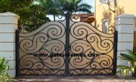
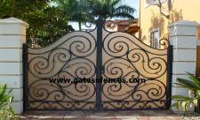

All of our Aluminum or wrought iron gates, or fences are designed and manufcatured to withstand a range of outdoor conditions. Our commitment to our customers and dedication to produce quality gates has earned us thousands of satisfied customers.
Although we offer a wide selection or ornamental designs or decorative designs, we can design and manufactur any style in aluminum or wrought iron metals. L.A. Ornamental & Rack Corp. also offers fences, garden or walk thru gates to match your driveway gates. With over thirty five years of experience in manufacturing and designing elegant, custom or exotic Aluminum Driveway Gates and Fences, our past and future customers can have peace of mind knowing that they are receiving quality workmanship. We are a fence company that gives our customers 110% of dedication to manufacture quality driveway gates and fences.
For a quote, please send an e-mail to LAOrnamental@aol.com